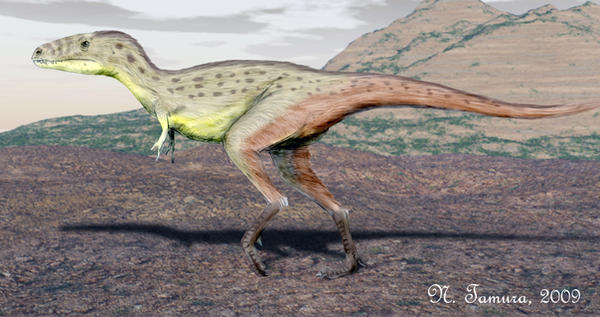

Raptorex
Raptorex byl malý, ale velmi agilní predátor, který žil v období křídy.

Veterupristisaurus

Veterupristisaurus byl plaz, který žil v období triasu.
Raptorex byl malý, ale velmi agilní predátor, který žil v období křídy.
Veterupristisaurus byl plaz, který žil v období triasu.